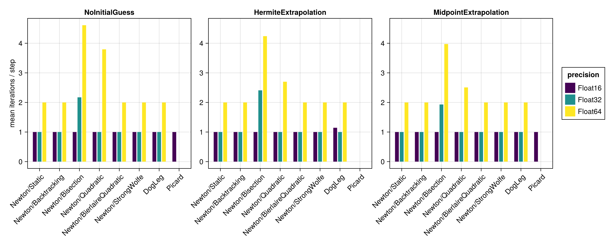
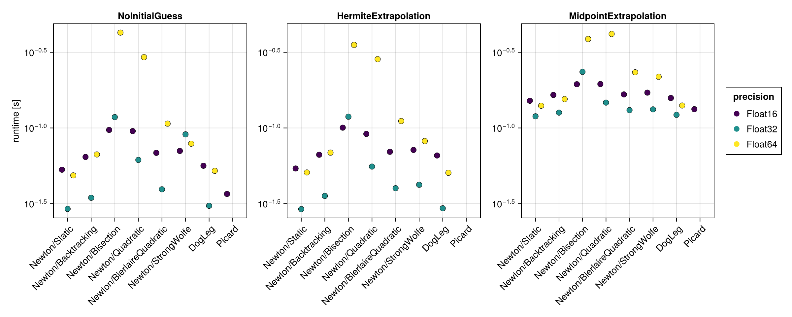
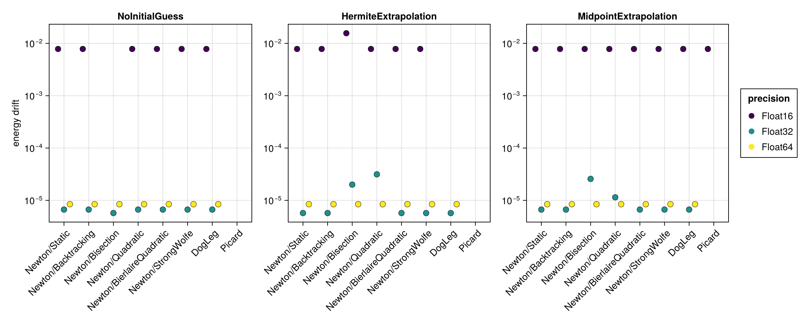
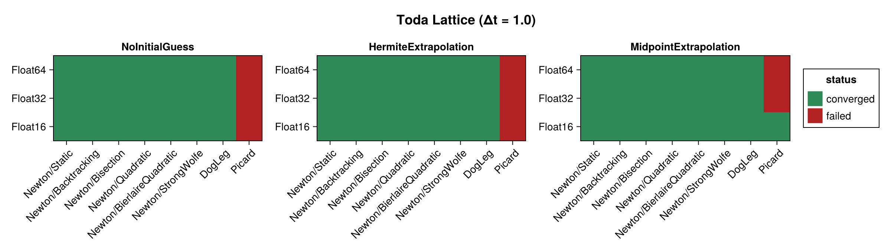
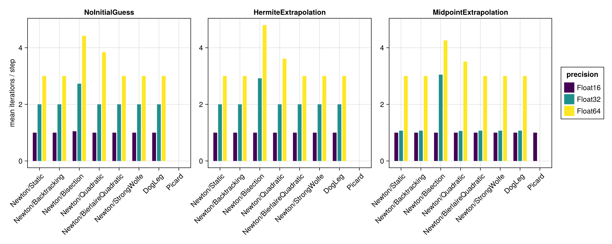
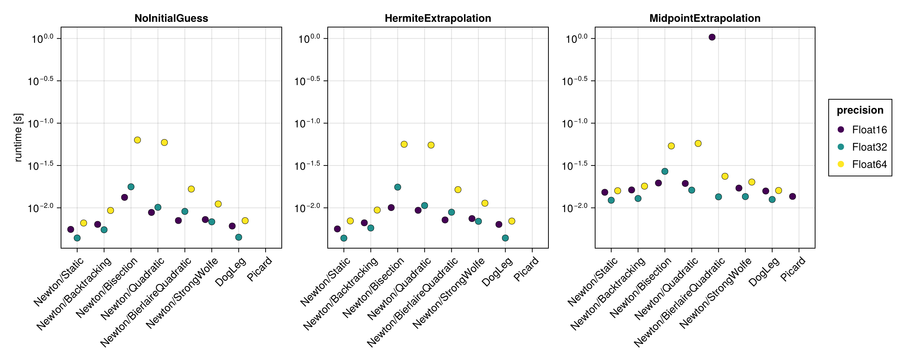
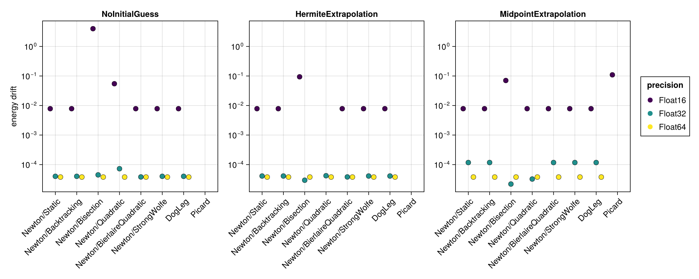

Toda Lattice
The Toda lattice is a nonlinear chain of particles with exponential nearest-neighbour interactions. It is built here with hodeproblem and a modest lattice size $N = 16$ (the full soliton example uses $N = 200$, which would make the implicit solves prohibitively expensive for a solver benchmark). The initial positions come from a bump of width $\mu = 0.3$ with zero initial momenta. The Hamiltonian $H(t, q, p)$ depends on both the coordinates and the momenta, so the energy-drift proxy is evaluated from the full $(q, p)$ state.
The benchmark below is regenerated at documentation build time with a single, fast timing pass. See the driver script scripts/midpoint_toda_lattice.jl for accurate BenchmarkTools measurements. The results are shown first for the standard step $\Delta t = 0.1$ and then repeated for a coarse step $\Delta t = 1.0$ (see Coarse time step (Δt = 1.0)).
using SolverBenchmark
spec = toda_lattice_spec(timespan = (0.0, 100.0), timestep = 0.1)
df = run_benchmark(spec; timing = :quick, verbose = false, quiet = true)Convergence
plot_convergence(df; title = "Toda Lattice")Nonlinear iterations
Mean number of nonlinear-solver iterations per time step (converged runs only):
plot_iterations(df)
Run time
plot_runtime(df)
Energy drift
Drift of the conserved energy $H(t, q, p)$ of the Toda lattice:
plot_energy_drift(df)
Discussion
- The 16-dimensional implicit solve is the most expensive of the examples, so the run-time differences between solver configurations are more pronounced.
- No closed-form solution is available, so accuracy is judged solely through the energy drift, which scales with the floating point precision.
Results table
markdown_table(summary_table(df))| precision | solver_label | initial_guess | converged | iterations_mean | runtime_s | max_residual | energy_drift |
|---|---|---|---|---|---|---|---|
| Float16 | Newton/Static | NoInitialGuess | ✓ | 1 | 0.053 | 0.0012 | 0.00781 |
| Float16 | Newton/Static | HermiteExtrapolation | ✓ | 1 | 0.054 | 0.0026 | 0.00781 |
| Float16 | Newton/Static | MidpointExtrapolation | ✓ | 1 | 0.151 | 0.00124 | 0.00781 |
| Float16 | Newton/Backtracking | NoInitialGuess | ✓ | 1 | 0.0643 | 0.0012 | 0.00781 |
| Float16 | Newton/Backtracking | HermiteExtrapolation | ✓ | 1 | 0.0665 | 0.0026 | 0.00781 |
| Float16 | Newton/Backtracking | MidpointExtrapolation | ✓ | 1 | 0.165 | 0.00124 | 0.00781 |
| Float16 | Newton/Bisection | NoInitialGuess | ✓ | 1 | 0.097 | 0.094 | 0 |
| Float16 | Newton/Bisection | HermiteExtrapolation | ✓ | 1 | 0.1 | 0.134 | 0.0156 |
| Float16 | Newton/Bisection | MidpointExtrapolation | ✓ | 1 | 0.195 | 0.0202 | 0.00781 |
| Float16 | Newton/Quadratic | NoInitialGuess | ✓ | 1 | 0.0954 | 0.00117 | 0.00781 |
| Float16 | Newton/Quadratic | HermiteExtrapolation | ✓ | 1 | 0.0914 | 0.00283 | 0.00781 |
| Float16 | Newton/Quadratic | MidpointExtrapolation | ✓ | 1 | 0.195 | 0.00112 | 0.00781 |
| Float16 | Newton/BierlaireQuadratic | NoInitialGuess | ✓ | 1 | 0.0685 | 0.0012 | 0.00781 |
| Float16 | Newton/BierlaireQuadratic | HermiteExtrapolation | ✓ | 1 | 0.0696 | 0.0026 | 0.00781 |
| Float16 | Newton/BierlaireQuadratic | MidpointExtrapolation | ✓ | 1 | 0.167 | 0.00124 | 0.00781 |
| Float16 | Newton/StrongWolfe | NoInitialGuess | ✓ | 1 | 0.0705 | 0.0012 | 0.00781 |
| Float16 | Newton/StrongWolfe | HermiteExtrapolation | ✓ | 1 | 0.0716 | 0.0026 | 0.00781 |
| Float16 | Newton/StrongWolfe | MidpointExtrapolation | ✓ | 1 | 0.171 | 0.00124 | 0.00781 |
| Float16 | DogLeg | NoInitialGuess | ✓ | 1 | 0.0563 | 0.0012 | 0.00781 |
| Float16 | DogLeg | HermiteExtrapolation | ✓ | 1.14 | 0.0658 | 0.0014 | 0 |
| Float16 | DogLeg | MidpointExtrapolation | ✓ | 1 | 0.158 | 0.00124 | 0.00781 |
| Float16 | Picard | NoInitialGuess | ✓ | 1 | 0.0366 | 0.189 | 0 |
| Float16 | Picard | HermiteExtrapolation | ✗ | — | — | — | — |
| Float16 | Picard | MidpointExtrapolation | ✓ | 1 | 0.133 | 0.041 | 0.00781 |
| Float32 | Newton/Static | NoInitialGuess | ✓ | 1 | 0.0292 | 8.25e-07 | 6.68e-06 |
| Float32 | Newton/Static | HermiteExtrapolation | ✓ | 1 | 0.0291 | 1.54e-07 | 5.72e-06 |
| Float32 | Newton/Static | MidpointExtrapolation | ✓ | 1 | 0.119 | 1.64e-07 | 6.68e-06 |
| Float32 | Newton/Backtracking | NoInitialGuess | ✓ | 1 | 0.0346 | 8.25e-07 | 6.68e-06 |
| Float32 | Newton/Backtracking | HermiteExtrapolation | ✓ | 1 | 0.0356 | 1.54e-07 | 5.72e-06 |
| Float32 | Newton/Backtracking | MidpointExtrapolation | ✓ | 1 | 0.126 | 1.64e-07 | 6.68e-06 |
| Float32 | Newton/Bisection | NoInitialGuess | ✓ | 2.17 | 0.118 | 2.97e-05 | 5.72e-06 |
| Float32 | Newton/Bisection | HermiteExtrapolation | ✓ | 2.41 | 0.119 | 3.04e-05 | 2e-05 |
| Float32 | Newton/Bisection | MidpointExtrapolation | ✓ | 1.93 | 0.235 | 3.05e-05 | 2.57e-05 |
| Float32 | Newton/Quadratic | NoInitialGuess | ✓ | 1 | 0.0615 | 2.42e-05 | 6.68e-06 |
| Float32 | Newton/Quadratic | HermiteExtrapolation | ✓ | 1 | 0.0556 | 1.28e-05 | 3.15e-05 |
| Float32 | Newton/Quadratic | MidpointExtrapolation | ✓ | 1 | 0.147 | 3.12e-06 | 1.14e-05 |
| Float32 | Newton/BierlaireQuadratic | NoInitialGuess | ✓ | 1 | 0.0393 | 8.25e-07 | 6.68e-06 |
| Float32 | Newton/BierlaireQuadratic | HermiteExtrapolation | ✓ | 1 | 0.04 | 1.54e-07 | 5.72e-06 |
| Float32 | Newton/BierlaireQuadratic | MidpointExtrapolation | ✓ | 1 | 0.131 | 1.64e-07 | 6.68e-06 |
| Float32 | Newton/StrongWolfe | NoInitialGuess | ✓ | 1 | 0.0908 | 8.25e-07 | 6.68e-06 |
| Float32 | Newton/StrongWolfe | HermiteExtrapolation | ✓ | 1 | 0.0421 | 1.54e-07 | 5.72e-06 |
| Float32 | Newton/StrongWolfe | MidpointExtrapolation | ✓ | 1 | 0.133 | 1.64e-07 | 6.68e-06 |
| Float32 | DogLeg | NoInitialGuess | ✓ | 1 | 0.0306 | 8.25e-07 | 6.68e-06 |
| Float32 | DogLeg | HermiteExtrapolation | ✓ | 1 | 0.0295 | 1.54e-07 | 5.72e-06 |
| Float32 | DogLeg | MidpointExtrapolation | ✓ | 1 | 0.122 | 1.64e-07 | 6.68e-06 |
| Float32 | Picard | NoInitialGuess | ✗ | 5.09 | 0.102 | 0.188 | — |
| Float32 | Picard | HermiteExtrapolation | ✗ | 5 | 0.0966 | 0.00115 | — |
| Float32 | Picard | MidpointExtrapolation | ✗ | 5 | 0.183 | 0.00031 | — |
| Float64 | Newton/Static | NoInitialGuess | ✓ | 2 | 0.0486 | 2.84e-16 | 8.45e-06 |
| Float64 | Newton/Static | HermiteExtrapolation | ✓ | 2 | 0.0508 | 3.02e-16 | 8.45e-06 |
| Float64 | Newton/Static | MidpointExtrapolation | ✓ | 2 | 0.14 | 2.7e-16 | 8.45e-06 |
| Float64 | Newton/Backtracking | NoInitialGuess | ✓ | 2 | 0.0668 | 2.84e-16 | 8.45e-06 |
| Float64 | Newton/Backtracking | HermiteExtrapolation | ✓ | 2 | 0.0687 | 3.02e-16 | 8.45e-06 |
| Float64 | Newton/Backtracking | MidpointExtrapolation | ✓ | 2 | 0.155 | 2.7e-16 | 8.45e-06 |
| Float64 | Newton/Bisection | NoInitialGuess | ✓ | 4.61 | 0.427 | 5.65e-14 | 8.45e-06 |
| Float64 | Newton/Bisection | HermiteExtrapolation | ✓ | 4.24 | 0.354 | 5.62e-14 | 8.45e-06 |
| Float64 | Newton/Bisection | MidpointExtrapolation | ✓ | 3.98 | 0.387 | 5.68e-14 | 8.45e-06 |
| Float64 | Newton/Quadratic | NoInitialGuess | ✓ | 3.79 | 0.294 | 5.49e-14 | 8.45e-06 |
| Float64 | Newton/Quadratic | HermiteExtrapolation | ✓ | 2.7 | 0.285 | 5.68e-14 | 8.45e-06 |
| Float64 | Newton/Quadratic | MidpointExtrapolation | ✓ | 2.51 | 0.418 | 4.73e-14 | 8.45e-06 |
| Float64 | Newton/BierlaireQuadratic | NoInitialGuess | ✓ | 2 | 0.107 | 2.86e-16 | 8.45e-06 |
| Float64 | Newton/BierlaireQuadratic | HermiteExtrapolation | ✓ | 2 | 0.111 | 3.01e-16 | 8.45e-06 |
| Float64 | Newton/BierlaireQuadratic | MidpointExtrapolation | ✓ | 2 | 0.233 | 3.11e-16 | 8.45e-06 |
| Float64 | Newton/StrongWolfe | NoInitialGuess | ✓ | 2 | 0.0787 | 2.84e-16 | 8.45e-06 |
| Float64 | Newton/StrongWolfe | HermiteExtrapolation | ✓ | 2 | 0.0819 | 3.02e-16 | 8.45e-06 |
| Float64 | Newton/StrongWolfe | MidpointExtrapolation | ✓ | 2 | 0.218 | 2.7e-16 | 8.45e-06 |
| Float64 | DogLeg | NoInitialGuess | ✓ | 2 | 0.0521 | 2.84e-16 | 8.45e-06 |
| Float64 | DogLeg | HermiteExtrapolation | ✓ | 2 | 0.0506 | 3.02e-16 | 8.45e-06 |
| Float64 | DogLeg | MidpointExtrapolation | ✓ | 2 | 0.141 | 2.7e-16 | 8.45e-06 |
| Float64 | Picard | NoInitialGuess | ✗ | 5.09 | 0.2 | 0.188 | — |
| Float64 | Picard | HermiteExtrapolation | ✗ | 5 | 0.196 | 0.00111 | — |
| Float64 | Picard | MidpointExtrapolation | ✗ | 5 | 0.33 | 0.00031 | — |
Coarse time step (Δt = 1.0)
With a ten times larger step the nonlinear solves per step become harder, which stresses the solvers more than the $\Delta t = 0.1$ results above.
spec1 = toda_lattice_spec(timespan = (0.0, 100.0), timestep = 1.0)
df1 = run_benchmark(spec1; timing = :quick, verbose = false, quiet = true)Convergence
plot_convergence(df1; title = "Toda Lattice (Δt = 1.0)")
Nonlinear iterations
plot_iterations(df1)
Run time
plot_runtime(df1)
Energy drift
plot_energy_drift(df1)
Results table
markdown_table(summary_table(df1))| precision | solver_label | initial_guess | converged | iterations_mean | runtime_s | max_residual | energy_drift |
|---|---|---|---|---|---|---|---|
| Float16 | Newton/Static | NoInitialGuess | ✓ | 1 | 0.00556 | 0.00229 | 0.00781 |
| Float16 | Newton/Static | HermiteExtrapolation | ✓ | 1 | 0.00563 | 0.00117 | 0.00781 |
| Float16 | Newton/Static | MidpointExtrapolation | ✓ | 1 | 0.0153 | 0.00106 | 0.00781 |
| Float16 | Newton/Backtracking | NoInitialGuess | ✓ | 1 | 0.00638 | 0.00229 | 0.00781 |
| Float16 | Newton/Backtracking | HermiteExtrapolation | ✓ | 1 | 0.00665 | 0.00117 | 0.00781 |
| Float16 | Newton/Backtracking | MidpointExtrapolation | ✓ | 1 | 0.0163 | 0.00106 | 0.00781 |
| Float16 | Newton/Bisection | NoInitialGuess | ✓ | 1.05 | 0.0133 | 0.238 | 3.99 |
| Float16 | Newton/Bisection | HermiteExtrapolation | ✓ | 1 | 0.0101 | 0.234 | 0.0938 |
| Float16 | Newton/Bisection | MidpointExtrapolation | ✓ | 1 | 0.0196 | 0.0122 | 0.0703 |
| Float16 | Newton/Quadratic | NoInitialGuess | ✓ | 1 | 0.00882 | 0.00379 | 0.0547 |
| Float16 | Newton/Quadratic | HermiteExtrapolation | ✓ | 1 | 0.00935 | 0.00191 | 0 |
| Float16 | Newton/Quadratic | MidpointExtrapolation | ✓ | 1 | 0.0194 | 0.00109 | 0.00781 |
| Float16 | Newton/BierlaireQuadratic | NoInitialGuess | ✓ | 1 | 0.00708 | 0.00229 | 0.00781 |
| Float16 | Newton/BierlaireQuadratic | HermiteExtrapolation | ✓ | 1 | 0.00719 | 0.00117 | 0.00781 |
| Float16 | Newton/BierlaireQuadratic | MidpointExtrapolation | ✓ | 1 | 1.04 | 0.00106 | 0.00781 |
| Float16 | Newton/StrongWolfe | NoInitialGuess | ✓ | 1 | 0.00727 | 0.00229 | 0.00781 |
| Float16 | Newton/StrongWolfe | HermiteExtrapolation | ✓ | 1 | 0.00747 | 0.00117 | 0.00781 |
| Float16 | Newton/StrongWolfe | MidpointExtrapolation | ✓ | 1 | 0.0171 | 0.00106 | 0.00781 |
| Float16 | DogLeg | NoInitialGuess | ✓ | 1 | 0.0061 | 0.00229 | 0.00781 |
| Float16 | DogLeg | HermiteExtrapolation | ✓ | 1 | 0.00637 | 0.00117 | 0.00781 |
| Float16 | DogLeg | MidpointExtrapolation | ✓ | 1 | 0.0158 | 0.00106 | 0.00781 |
| Float16 | Picard | NoInitialGuess | ✗ | — | — | — | — |
| Float16 | Picard | HermiteExtrapolation | ✗ | — | — | — | — |
| Float16 | Picard | MidpointExtrapolation | ✓ | 1 | 0.0136 | 0.0252 | 0.109 |
| Float32 | Newton/Static | NoInitialGuess | ✓ | 2 | 0.0044 | 2.28e-07 | 4.01e-05 |
| Float32 | Newton/Static | HermiteExtrapolation | ✓ | 2 | 0.00439 | 1.31e-07 | 4.1e-05 |
| Float32 | Newton/Static | MidpointExtrapolation | ✓ | 1.07 | 0.0123 | 2.88e-05 | 0.000117 |
| Float32 | Newton/Backtracking | NoInitialGuess | ✓ | 2 | 0.00551 | 2.28e-07 | 4.01e-05 |
| Float32 | Newton/Backtracking | HermiteExtrapolation | ✓ | 2 | 0.00578 | 1.31e-07 | 4.1e-05 |
| Float32 | Newton/Backtracking | MidpointExtrapolation | ✓ | 1.07 | 0.0129 | 2.88e-05 | 0.000117 |
| Float32 | Newton/Bisection | NoInitialGuess | ✓ | 2.73 | 0.0177 | 2.37e-05 | 4.48e-05 |
| Float32 | Newton/Bisection | HermiteExtrapolation | ✓ | 2.92 | 0.0176 | 3.02e-05 | 2.96e-05 |
| Float32 | Newton/Bisection | MidpointExtrapolation | ✓ | 3.05 | 0.027 | 2.88e-05 | 2.19e-05 |
| Float32 | Newton/Quadratic | NoInitialGuess | ✓ | 2 | 0.0101 | 2.21e-05 | 7.25e-05 |
| Float32 | Newton/Quadratic | HermiteExtrapolation | ✓ | 2 | 0.0106 | 3.89e-06 | 4.2e-05 |
| Float32 | Newton/Quadratic | MidpointExtrapolation | ✓ | 1.06 | 0.0162 | 3.01e-05 | 3.24e-05 |
| Float32 | Newton/BierlaireQuadratic | NoInitialGuess | ✓ | 2 | 0.00907 | 2.22e-07 | 3.81e-05 |
| Float32 | Newton/BierlaireQuadratic | HermiteExtrapolation | ✓ | 2 | 0.00888 | 1.43e-07 | 3.81e-05 |
| Float32 | Newton/BierlaireQuadratic | MidpointExtrapolation | ✓ | 1.07 | 0.0135 | 2.88e-05 | 0.000117 |
| Float32 | Newton/StrongWolfe | NoInitialGuess | ✓ | 2 | 0.00684 | 2.28e-07 | 4.01e-05 |
| Float32 | Newton/StrongWolfe | HermiteExtrapolation | ✓ | 2 | 0.00693 | 1.31e-07 | 4.1e-05 |
| Float32 | Newton/StrongWolfe | MidpointExtrapolation | ✓ | 1.07 | 0.0136 | 2.88e-05 | 0.000117 |
| Float32 | DogLeg | NoInitialGuess | ✓ | 2 | 0.0045 | 2.28e-07 | 4.01e-05 |
| Float32 | DogLeg | HermiteExtrapolation | ✓ | 2 | 0.0044 | 1.31e-07 | 4.1e-05 |
| Float32 | DogLeg | MidpointExtrapolation | ✓ | 1.07 | 0.0125 | 2.88e-05 | 0.000117 |
| Float32 | Picard | NoInitialGuess | ✗ | — | — | — | — |
| Float32 | Picard | HermiteExtrapolation | ✗ | — | — | — | — |
| Float32 | Picard | MidpointExtrapolation | ✗ | 5 | 0.0199 | 0.0183 | — |
| Float64 | Newton/Static | NoInitialGuess | ✓ | 3 | 0.00662 | 2.61e-15 | 3.78e-05 |
| Float64 | Newton/Static | HermiteExtrapolation | ✓ | 3 | 0.007 | 2.82e-16 | 3.78e-05 |
| Float64 | Newton/Static | MidpointExtrapolation | ✓ | 3 | 0.0159 | 2.41e-16 | 3.78e-05 |
| Float64 | Newton/Backtracking | NoInitialGuess | ✓ | 3 | 0.00931 | 2.61e-15 | 3.78e-05 |
| Float64 | Newton/Backtracking | HermiteExtrapolation | ✓ | 3 | 0.00941 | 2.82e-16 | 3.78e-05 |
| Float64 | Newton/Backtracking | MidpointExtrapolation | ✓ | 3 | 0.018 | 2.41e-16 | 3.78e-05 |
| Float64 | Newton/Bisection | NoInitialGuess | ✓ | 4.42 | 0.0632 | 2.5e-16 | 3.78e-05 |
| Float64 | Newton/Bisection | HermiteExtrapolation | ✓ | 4.8 | 0.0563 | 4.82e-14 | 3.78e-05 |
| Float64 | Newton/Bisection | MidpointExtrapolation | ✓ | 4.26 | 0.0538 | 4.08e-14 | 3.78e-05 |
| Float64 | Newton/Quadratic | NoInitialGuess | ✓ | 3.84 | 0.0591 | 4.34e-14 | 3.78e-05 |
| Float64 | Newton/Quadratic | HermiteExtrapolation | ✓ | 3.61 | 0.0551 | 4.9e-14 | 3.78e-05 |
| Float64 | Newton/Quadratic | MidpointExtrapolation | ✓ | 3.51 | 0.0576 | 2.63e-14 | 3.78e-05 |
| Float64 | Newton/BierlaireQuadratic | NoInitialGuess | ✓ | 3 | 0.0167 | 1.67e-15 | 3.78e-05 |
| Float64 | Newton/BierlaireQuadratic | HermiteExtrapolation | ✓ | 3 | 0.0164 | 2.59e-16 | 3.78e-05 |
| Float64 | Newton/BierlaireQuadratic | MidpointExtrapolation | ✓ | 3 | 0.0236 | 2.73e-16 | 3.78e-05 |
| Float64 | Newton/StrongWolfe | NoInitialGuess | ✓ | 3 | 0.0111 | 2.61e-15 | 3.78e-05 |
| Float64 | Newton/StrongWolfe | HermiteExtrapolation | ✓ | 3 | 0.0113 | 2.82e-16 | 3.78e-05 |
| Float64 | Newton/StrongWolfe | MidpointExtrapolation | ✓ | 3 | 0.0202 | 2.41e-16 | 3.78e-05 |
| Float64 | DogLeg | NoInitialGuess | ✓ | 3 | 0.00705 | 2.61e-15 | 3.78e-05 |
| Float64 | DogLeg | HermiteExtrapolation | ✓ | 3 | 0.00697 | 2.82e-16 | 3.78e-05 |
| Float64 | DogLeg | MidpointExtrapolation | ✓ | 3 | 0.016 | 2.41e-16 | 3.78e-05 |
| Float64 | Picard | NoInitialGuess | ✗ | — | — | — | — |
| Float64 | Picard | HermiteExtrapolation | ✗ | — | — | — | — |
| Float64 | Picard | MidpointExtrapolation | ✗ | 5 | 0.035 | 0.0183 | — |